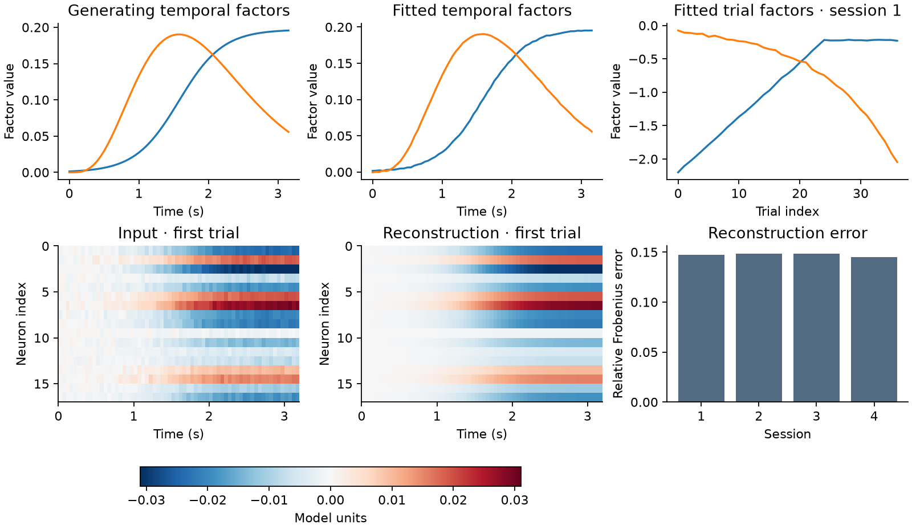

Neuralign
Align neural recordings. Keep their neurons, timing and individual trials.
Neuralign fits recordings together using shared temporal components and session-specific neuron and trial factors. Sessions can have different neurons and trial counts; they must share the same time axis.
Start with a small example
from neuralign import NeuralignConfig, NeuralignModel
from neuralign.simulation import simulate_sessions
sessions, truth = simulate_sessions(seed=42)
config = NeuralignConfig(rank=2, max_iter=500, seed=42, progress=False)
factors = NeuralignModel(sessions, config=config).fit("cpu")
Run the example and plot the results. It generates its own data and needs no manuscript caches.

Find what you need
- Getting started: installation, input format and a complete example.
- Model and outputs: factors, projections and reconstructions.
- API reference: commonly used classes, methods and settings.
- Reproducibility: save fits and separate fitting from evaluation.
Neuralign is research software. The current package version is 0.1.0; record the version or commit used in your analysis.